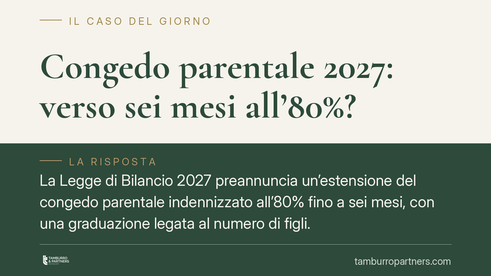

Congedo parentale 2027: verso sei mesi all'80%?
La Legge di Bilancio 2027 preannuncia un'estensione del congedo parentale indennizzato all'80% fino a sei mesi, con una graduazione legata al numero di figli. Si tratta, allo stato, di un orientamento in via di definizione: importi, platea e ripartizione tra genitori dipenderanno dal testo definitivo e dalle successive istruzioni INPS. Vediamo cosa cambierebbe e come prepararsi.

Di cosa parliamo
Le anticipazioni sulla Legge di Bilancio 2027 ipotizzano un rafforzamento del congedo parentale: fino a sei mesi indennizzati all'80% della retribuzione, con una modulazione collegata al numero di figli.
Una premessa di metodo è doverosa. Ciò che circola oggi è un annuncio normativo, non una disciplina già applicabile. Soglia complessiva, importi effettivi, platea dei beneficiari e regole di ripartizione tra i genitori assumeranno contorni certi solo con il testo definitivo della manovra e con le relative circolari INPS. Invitiamo quindi a leggere i numeri qui riportati come indicazioni prospettiche, non come dato consolidato.
Inquadramento normativo
Il congedo parentale è disciplinato dal D.lgs. 151/2001 (Testo Unico maternità e paternità), artt. 32 e seguenti. La norma riconosce a ciascun genitore lavoratore dipendente il diritto di astenersi dal lavoro, entro limiti temporali e fino a una certa età del figlio, percependo un'indennità a carico dell'INPS.
Storicamente l'indennità ordinaria era fissata al 30% della retribuzione. Negli ultimi anni il legislatore è intervenuto più volte per elevare, in via temporanea e per un numero limitato di mensilità, questa percentuale. Non riportiamo qui cifre puntuali per singola annualità proprio perché la materia ha subito ritocchi successivi e ravvicinati: ciò che rileva è la tendenza a innalzare l'indennità rispetto al tradizionale 30%.
In questa cornice si colloca l'ipotesi 2027, che — se confermata — rappresenterebbe un ulteriore passo nella stessa direzione, ampliando sia la percentuale sia il numero di mesi coperti.
Implicazioni pratiche
Per il genitore lavoratore dipendente, l'eventuale riforma inciderebbe su due piani.
Il primo è economico: un'indennità all'80% riduce in modo sensibile la perdita retributiva legata all'assenza, rendendo più sostenibile l'utilizzo effettivo del congedo.
Il secondo è organizzativo: molto dipenderà dal modo in cui saranno costruite le soglie. Un nodo centrale è se i sei mesi debbano intendersi come limite complessivo della coppia oppure come diritto individuale di ciascun genitore; e, in parallelo, se e in quale misura le mensilità agevolate siano trasferibili tra i due. Sono aspetti che cambiano radicalmente la programmazione familiare e che oggi non sono definiti.
Anche la graduazione per numero di figli resta da chiarire: non è ancora noto se l'estensione operi per ogni figlio, se scatti da un certo numero in poi, o con quali meccanismi di cumulo.
Per i datori di lavoro, infine, il tema riguarda la gestione delle assenze prolungate e il coordinamento con le esigenze organizzative, nel rispetto dei diritti riconosciuti dal Testo Unico.
Cosa fare in concreto
- Verificate l'età del figlio e i limiti temporali già previsti dal D.lgs. 151/2001: il diritto al congedo resta ancorato a quelle soglie anche in attesa delle novità.
- Coordinatevi tra genitori prima di presentare le domande: in presenza di un possibile limite complessivo o di regole di trasferibilità, l'ordine e la distribuzione dei periodi incidono sull'indennità.
- Conservate le buste paga e la documentazione retributiva: il calcolo dell'indennità si basa sulla retribuzione di riferimento.
- Attendete le circolari INPS prima di pianificare i periodi sulla base delle nuove percentuali: fino alla pubblicazione delle istruzioni, importi e requisiti non sono certi.
- Comunicate per iscritto al datore di lavoro la richiesta di congedo, nei termini di preavviso previsti, così da avere traccia della domanda e della sua tempistica.
In sintesi
L'estensione del congedo parentale all'80% fino a sei mesi è, oggi, un'ipotesi di riforma da confermare. La base giuridica applicabile resta quella del Testo Unico del 2001. Consigliamo di monitorare l'approvazione definitiva della manovra e, soprattutto, le istruzioni operative INPS, che tradurranno l'annuncio in regole concrete su importi, platea e ripartizione.
---
Contributo informativo a cura di Tamburro & Partners Avvocati - Avv. Giuseppe Tamburro. Non costituisce parere legale.
Ogni storia di lavoro ha i suoi tempi.
Se gestisci HR e vuoi un confronto su contenzioso, ispezioni o licenziamenti, scrivi allo studio. Ti rispondiamo entro un giorno lavorativo.